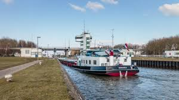

Extra Inhoud
Extra 1: Aanvullende Projecten en Ervaringen
Deze pagina bevat aanvullende projecten en ervaringen die buiten de reguliere lessen om zijn ontstaan. Gedurende het vak Geodesign heb ik veel praktische ervaring opgedaan met verschillende tools en technieken.
Een van de meest waardevolle ervaringen was het werken met echte geografische data en het leren hoe deze data kan worden getransformeerd in betekenisvolle visualisaties. Dit gaat verder dan alleen het maken van kaarten; het gaat om het vertellen van verhalen met data.
Ik heb ook veel geleerd over de samenwerking tussen designers, developers en geografen. Deze interdisciplinaire aanpak is essentieel in het veld van Geodesign, omdat het zorgt voor kaarten die zowel technisch correct als visueel aantrekkelijk zijn.
De Houtribsluis, waarvan we foto's hebben bekeken, is een goed voorbeeld van hoe geografische kennis kan worden toegepast op praktische infrastructuurprojecten. Dit soort projecten tonen hoe Geodesign niet alleen theoretisch is, maar ook praktische toepassingen heeft in de echte wereld.
